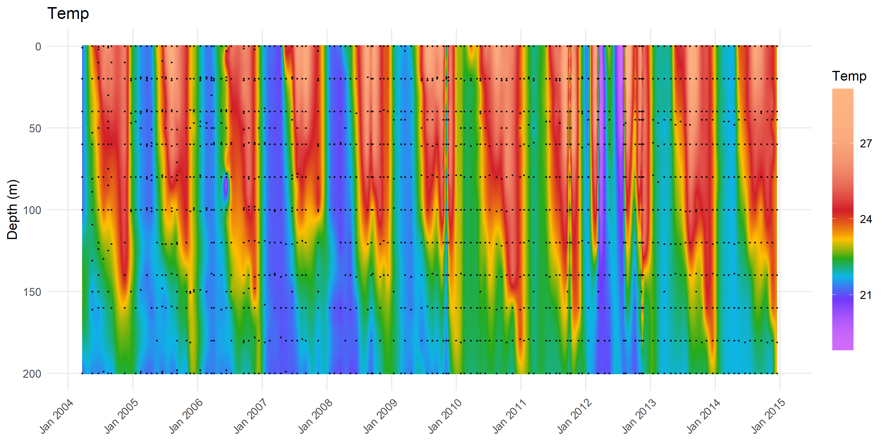
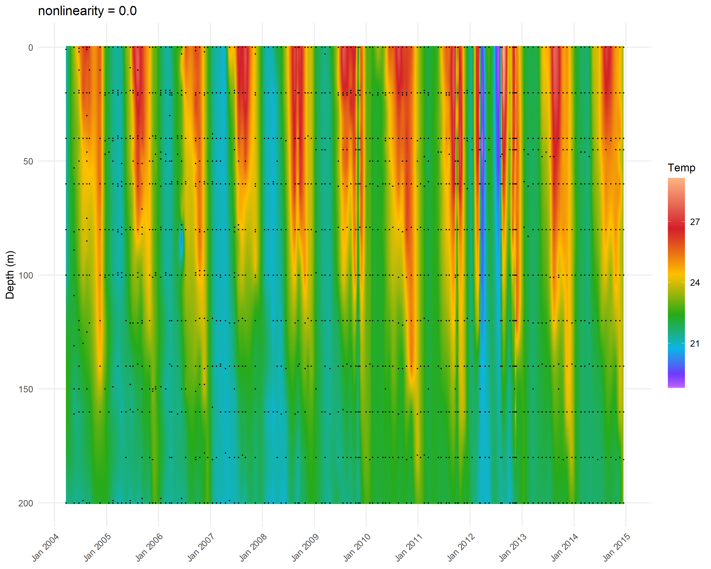
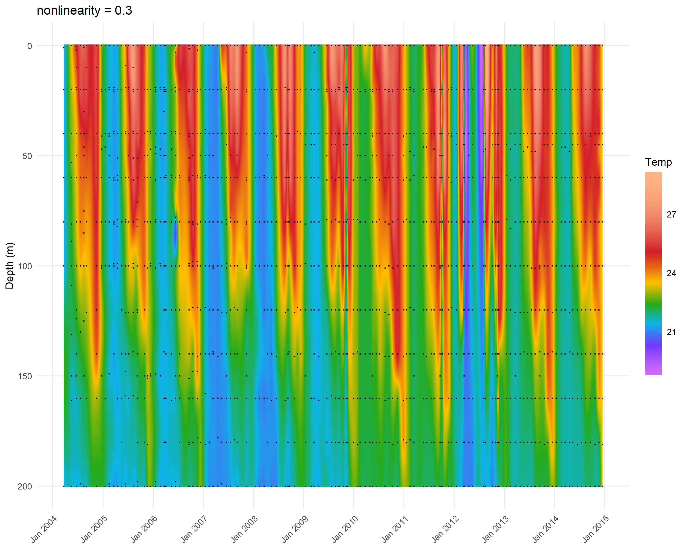
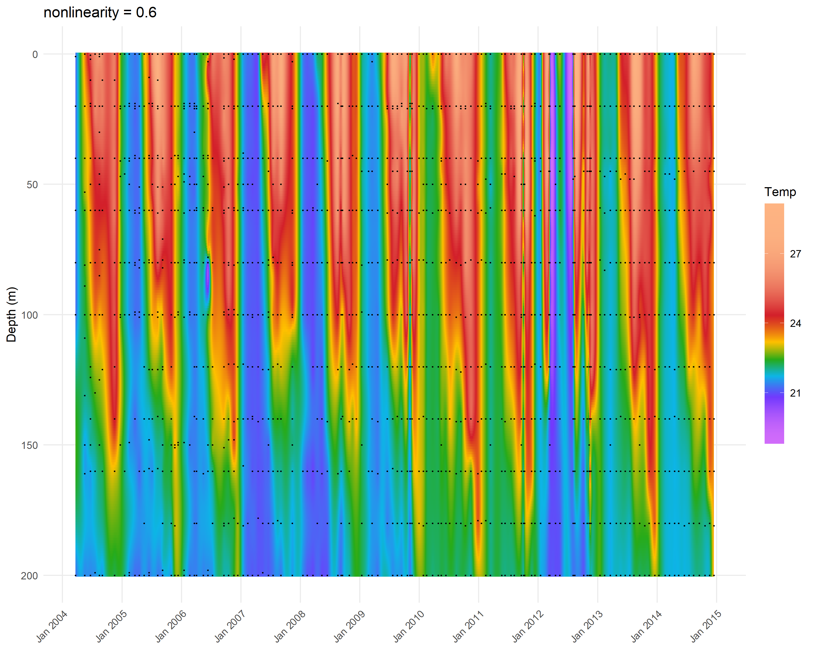
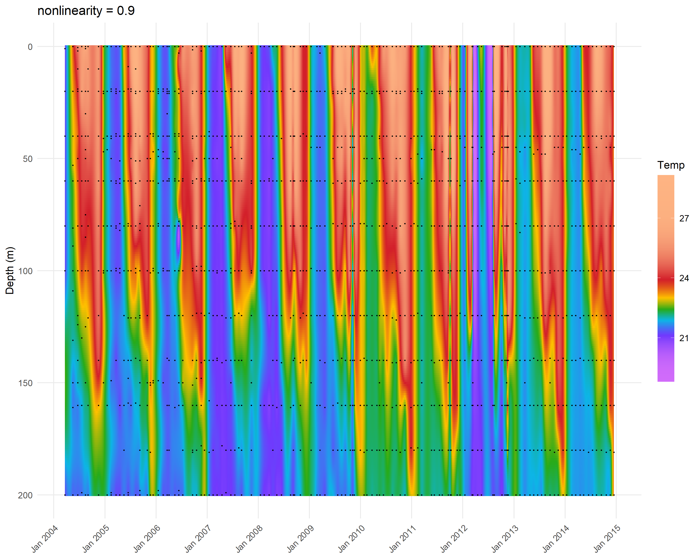
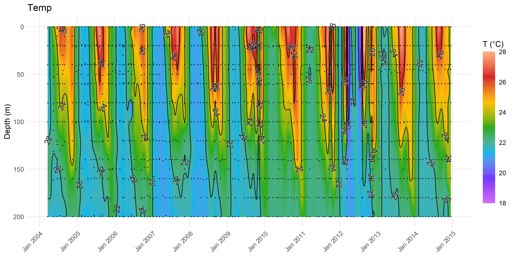

divaodv creates Ocean Data View (ODV) style depth × time section plots from scattered oceanographic profile data. It uses DIVAnd (Data-Interpolating Variational Analysis) via Julia to interpolate observations onto a regular grid, then renders the result with ggplot2.
Prerequisites
Before using divaodv, you need Julia and DIVAnd.jl installed. Run the built-in check:
diva_setup_check()
Checking Julia + DIVAnd setup...
Julia version 1.10.8 at location C:\Users\ILIAMA~1\AppData\Local\Programs\JULIA-~1.8\bin will be used.
Loading setup script for JuliaCall...
Finish loading setup script for JuliaCall.
[OK] Julia found
[OK] DIVAnd.jl loaded
[OK] Statistics loaded
Julia version: 1.10.8
Minimal example
The package ships with a small temperature dataset from the NMP Gulf of Aqaba Station A monitoring programme:
'data.frame': 2146 obs. of 3 variables:
$ Date : Date, format: "2004-01-18" "2004-01-18" ...
$ depth: num 0 0 0 19 20 25 40 48 50 50 ...
$ Temp : num NA NA NA NA NA NA NA NA NA NA ...
The data frame needs three columns: Date (Date class), depth (numeric, metres), and at least one variable column.
Your first ODV plot
p <-diva_plot_odv(df = df,var ="Temp",time_corr =20,depth_corr =15,epsilon2 =0.01,max_depth =200,palette ="odv")
[divaodv] Initialising Julia + DIVAnd (first call this session)...
Warning in diva_plot_odv(df = df, var = "Temp", time_corr = 20, depth_corr =
15, : Grid for 'Temp' has 788,121 cells -- consider increasing depth_resolution
or decreasing time_resolution.
print(p)
Warning: Removed 9 rows containing missing values or values outside the scale range
(`geom_point()`).
Temperature section — Gulf of Aqaba, upper 200 m.
That’s it — one function call from raw profiles to a publication-quality section plot.
Understanding the parameters
Correlation lengths
The two most important parameters control how far DIVAnd smooths in each dimension:
time_corr — temporal correlation length in days. Larger values produce smoother fields in time. For physical variables like temperature (which change slowly), 15–30 days works well. For patchy biological variables like chlorophyll, 5–10 days preserves mesoscale structure.
depth_corr — depth correlation length in metres. Controls vertical smoothing. Typically 10–20 m for the upper water column.
Signal-to-noise ratio (ε²)
epsilon2 controls the balance between fitting observations and producing a smooth field. Smaller values (0.001–0.01) trust the data more; larger values (0.1–1.0) produce smoother fields. For quality-controlled monitoring data, 0.01 is a good starting point.
Log transforms
Many biological and chemical variables (chlorophyll, nutrients, cell counts) have right-skewed distributions. Setting transform = "log" applies a log transform before interpolation and back-transforms afterward:
A linear colour scale wastes most of the palette when a variable is strongly skewed — nutrients, chlorophyll and cell counts typically are. Ocean Data View solves this with two sliders on its Color Mapping tab, and scale_fill_odv() reproduces their effect:
median — the position within the colour range that receives the middle colour. Below 0.5 gives more of the palette to high values; above 0.5, to low values.
nonlinearity — how sharply resolution concentrates around that median, at the expense of the range extremes. 0 is linear.
cm_median <-0.35# where in the range the middle colour sitscm_nonlin <-0.6# how hard to concentrate resolution there
Warning in diva_plot_odv(df, "Temp", time_corr = 20, depth_corr = 15, zlim =
c(18, : Grid for 'Temp' has 788,121 cells -- consider increasing
depth_resolution or decreasing time_resolution.
p
Warning: Removed 9 rows containing missing values or values outside the scale range
(`geom_point()`).
Figure 1: Default linear colour mapping. Palette steps are evenly spaced across the value range.
Then recolour it:
p +scale_fill_odv(median = cm_median, nonlinearity = cm_nonlin)
Scale for fill is already present.
Adding another scale for fill, which will replace the existing scale.
Warning: Removed 9 rows containing missing values or values outside the scale range
(`geom_point()`).

Figure 2: ODV-style mapping with median = 0.35 and nonlinearity = 0.6. Colour resolution concentrates around the shifted midpoint.
Comparing Figure 1 with Figure 2: both show the same interpolated field over the same limits, and both colourbars carry the same evenly spaced, round-numbered ticks. What changes is where the palette spends its resolution. Setting median to 0.35 moves the middle colour below the centre of the range, and nonlinearity at 0.6 steepens the transfer curve there, so gradients near the thermocline separate into distinct bands instead of compressing into one or two.
The ticks stay linear in Figure 2. Only the colour stops move, which is what keeps the legend readable — a transformed axis would instead bunch the labels. Contours are unaffected and stay under contour_binwidth, mirroring ODV’s separate Contours tab.
The important property is visible in the two chunks above: DIVAnd ran once. scale_fill_odv() operates on the finished ggplot object, so every recolour after that is instant and you can sweep parameters as fast as you would drag the ODV sliders.
Scale for fill is already present.
Adding another scale for fill, which will replace the existing scale.
Warning: Removed 9 rows containing missing values or values outside the scale range
(`geom_point()`).
Scale for fill is already present.
Adding another scale for fill, which will replace the existing scale.
Warning: Removed 9 rows containing missing values or values outside the scale range
(`geom_point()`).
Scale for fill is already present.
Adding another scale for fill, which will replace the existing scale.
Warning: Removed 9 rows containing missing values or values outside the scale range
(`geom_point()`).
Scale for fill is already present.
Adding another scale for fill, which will replace the existing scale.
Warning: Removed 9 rows containing missing values or values outside the scale range
(`geom_point()`).

Figure 3: Rising nonlinearity at a fixed median. No re-interpolation between panels.

Figure 4: Rising nonlinearity at a fixed median. No re-interpolation between panels.

Figure 5: Rising nonlinearity at a fixed median. No re-interpolation between panels.

Figure 6: Rising nonlinearity at a fixed median. No re-interpolation between panels.
The host plot’s zlim, palette and fill_label are inherited, so a bare scale_fill_odv(median = 0.35) will not silently reset them. Pass any of them explicitly to override.
Once you have settled on values, fold them into the original call — the two arguments below are equivalent to adding the scale afterwards:
Contours are off by default. They can be set when the plot is built, or added to a finished plot the same way colour mapping is — and for the same reason, adding them costs nothing:
cn_breaks <-c(20, 22, 24, 26)
p +odv_contours(breaks = cn_breaks)
Warning: Removed 9 rows containing missing values or values outside the scale range
(`geom_point()`).

Figure 7: Explicit contour levels at 20, 22, 24, 26.
p here is the plot interpolated back in Section 9. Contours at 20, 22, 24, 26 °C are drawn onto it without touching DIVAnd.
Even spacing works too, and the two forms are mutually exclusive — breaks wins if you pass both, with a warning:
p +odv_contours(binwidth =2, labels =FALSE)
Warning: Removed 9 rows containing missing values or values outside the scale range
(`geom_point()`).
Figure 8: Even contour spacing at 2 °C intervals, labels suppressed.
odv_contours()replaces whatever contours are already on the plot rather than adding a second set, so you can call it repeatedly while tuning without accumulating layers. To take them off entirely:
p +odv_contours(breaks = cn_breaks) +odv_contours_remove()
Warning: Removed 9 rows containing missing values or values outside the scale range
(`geom_point()`).
For projects with many variables, use diva_variable_config() to create reusable parameter sets:
# Load the 12-variable NMP defaultscfg <-nmp_default_config()# Plot each variablefor (v innames(cfg)) { cv <- cfg[[v]] p <-diva_plot_odv(df = my_data,var = cv$var,time_corr = cv$time_corr,depth_corr = cv$depth_corr,epsilon2 = cv$epsilon2,transform = cv$transform )print(p)}
How the metric tensor works
A common pitfall when using DIVAnd is setting the metric tensor (pmn) to all ones. This tells DIVAnd that each grid cell is 1 × 1 in physical units, regardless of actual spacing — which breaks the correlation length interpretation and produces vertical-stripe artefacts.
divaodv computes pmn correctly from the actual grid spacing:
dz = max_depth / (n_depth - 1) # metres per cell
dt = max_time / (n_time - 1) # years per cell
pm = 1 / dz # points per metre
pn = 1 / dt # points per year
This means correlation lengths are always honoured regardless of grid resolution — you can change time_resolution from 365 to 52 without affecting the physical smoothing behaviour.